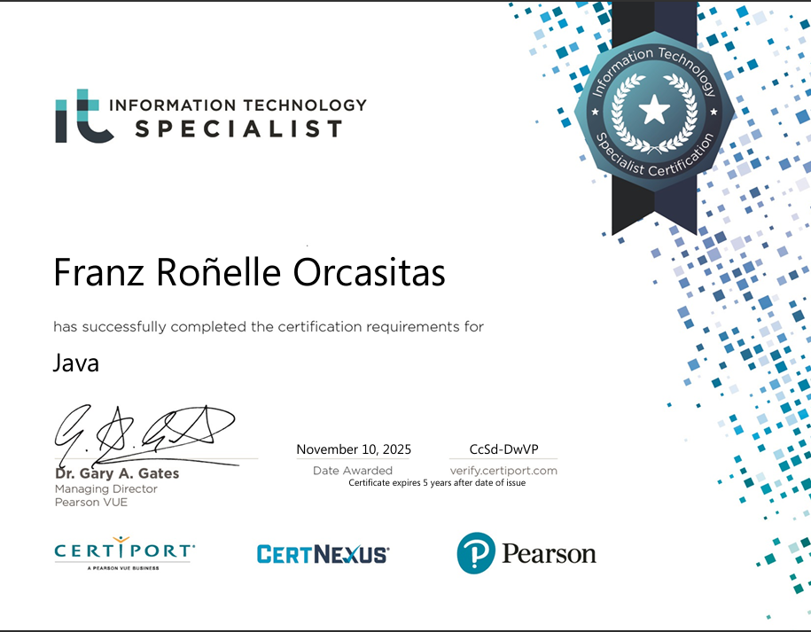

Achievements/Certifications
- Information Technology Specialist in Java certification - 2025

- High School Graduate in Mapua Malayan Colleges Mindanao - 2024
- Champion in Board Games (Scrabble) on Foundation Week for CCIS - 2024
Previous Projects
- Gradely: Grading System and Tracker for Students for IT101-2
- SpendSense: A Personal Budget Tracker for IT102
- Quiz Bowl Console Game for IT101-1
- FreshSense (M1FA2 for IT103L)
Educational Experience
- Kindergarten: St. Ignatius School of Davao
- Elementary:
- Brokenshire College Toril - Grade 1 and 2
- Calasanz de Davao Academy - Grade 3 and 4
- Davao City Special School - Grade 5 and 6 - Graduated Elementary in 2018
- Junior High School: Brokenshire College Toril
- Senior High School: Mapua Malayan Colleges Mindanao, STEM Graduate, With High Honors, Graduated High School in 2024
- College: Mapua Malayan Colleges Mindanao, BS Computer Science (ongoing)